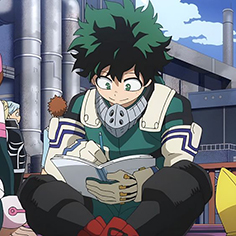
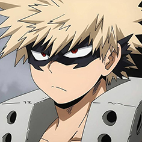
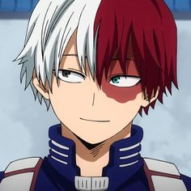
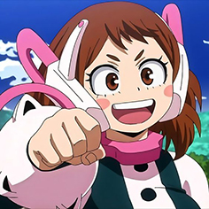
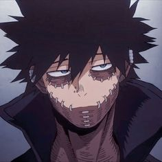

-
Izuku Midoriya
Descrição
Izuku Midoriya, também conhecido como Deku, é um estudante da U.A, sucessor de All Might e atual usuário do One For All. Ele também é o protagonista de My Hero Academia. Izuku é um garoto muito tímido, prestativo e educado, frequentemente exagerando em situações anormais com expressões exageradas.
-
Katsuki Bakugo
Descrição
É o rival do protagonista, Izuku Midoriya. Katsuki é uma pessoa bastante grosseira, violenta, arrogante e agressiva e tem uma tendência ao bullying, assim como fazia com Izuku Midoriya, quem ele via como um obstáculo a ser superado, porém agora o trata como um rival.
-
Shoto Todoroki
Descrição
Shoto Todoroki é um dos principais personagens de My Hero Academia. É filho de Endeavor e amigo de Izuku Midoriya. As características físicas mais notáveis na aparência de Shoto é o seu cabelo branco e vermelho, seus olhos preto e azul e uma queimadura no lado esquerdo do rosto.
-
Ochaco Uraraka
Descrição
Ochaco é uma pessoa calorosa, fofa e animada que pensa em tudo positivamente, embora seja objetiva o suficiente para ver defeitos e virtudes. Ela geralmente é empática e amigável com aqueles que encontra, e ela vai tentar ajudar ou defender qualquer pessoa que seja gentil com ela ou precise de ajuda.
-
Dabi
Descrição
Dabi é um vilão Rank-B, membro da Liga dos Vilões e líder do Esquadrão de Ação da Vanguarda. É um dos principais antagonistas coadjuvantes de My Hero Academia.